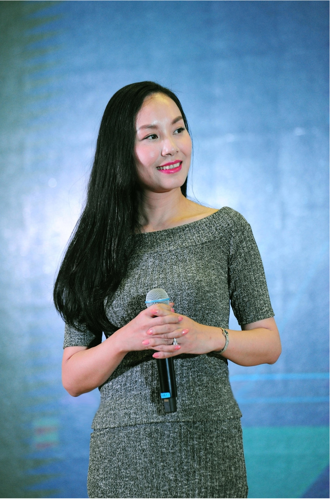

2016年10月11日晚7点，北大光华管理学院。
新希望少掌门刘畅在这里发表演讲。这是她独立掌舵新希望后的首次正式公开露面。
80后的她，有过众多的标签：中国最大食品和现代农业上市公司新希望六和掌门人、创二代、海归、不霸道女总裁……今天，她站在台前，以娓娓道来的方式向莘莘学子讲述着自己和新希望的有趣故事。
企业高层公开亮相的地方，往往是精心选择的结果。提起北大，除了“最高学府”的光环以外，还很容易让人联想到“思想自由、兼容并包”。这是其最富盛名的校长蔡元培提出的教育理念。百年来，短短八个字不仅仅被看作是北大的标签，还是中国学界孜孜以求的大学精神。
“与其守成法，毋宁尚自然；与其求划一，毋宁展个性”，刘畅引用蔡元培这句名句开始讲述自己的青葱年华。
从一个故事开始。十几岁时，刘畅到英语角练习英语。为了结识更多的朋友，她就冒出了一个想法，自己印了很多名片，上面写着:“刘畅，女，14岁”，还附上自己的BB机号码和个人照片，方便更多人找到自己。母亲为此事还生了不少气。
“这些名片至今仍然存放在父亲的保险箱里，每当提起此事就觉得非常滑稽。”刘畅笑了。
每个人骨子里都有一些叛逆的东西，无非就是要追求自己的存在价值。她说，“每个人无论经历过什么，都离不开聆听自己内心的声音。一个人越是叛逆，往往越能证明她有想法。”
“尽管我自认为是一个叛逆的人，但是我也明白自己应该承担什么样的责任。”刘畅说，她很喜欢《蜘蛛侠》中那句台词：With great power comes great responsibility（能力越大，责任越大）。
作为一位“白富美”，她本来可以选择去过那种更加自由、随心的生活，因为她对文艺、时尚有发自内心的偏爱，但是，扪心自问，她的内心依然有对亲情割舍不去的联结，这也成为回归新希望的第一原动力。她试图找到一种家庭的新的平衡的相处方式，最终选择了做回外人“看起来如此传统”的产业。
特立独行，她在包容中传承父辈的事业
独辟蹊径，新希望在机遇面前永远主动出击
作为新希望“同龄人”、骨子里带着叛逆精神的刘畅，对新希望30年的同样不凡的成长历程记忆，可谓历历在目。刘畅说，新希望34年的历史，就印证了这句话：你要与别人不一样。
艰辛的创业年代，新希望没有“安分守己”。第一代的创业者中，有不少人是农民，而父亲刘永好是为数不多的知识分子创业者。正是得益于他的知识、眼界和格局，新希望走出了特立独行的道路。在别人满足于小富即安时，新希望建立了民营集团；在别人还不理解资本市场为何物时，新希望在四川第一家启动了上市；当中国市场面临前所未有的机遇和挑战时，1997年新希望国际化的步伐已经迈向全球。
作为最早创立的民营实业以及投资集团之一，目前的新希望已经发展成为中国最大的肉、蛋、奶综合供应商，并连续14年在中国民营企业中名列前茅。新希望在全球30多个国家和地区拥有分子公司600多家，7万多员工，年销售收入近千亿元人民币。从饲料生产到食品加工，从实体产业到金融服务，新希望已经成长为一家多元化综合性跨国公司。
刘畅感叹道，新希望之所以能够做成今天这样的规模，与追求“与别人不一样”的思路有着密不可分的关系，新希望每一步都是在“主动选择”，而不是墨守成规或者随波逐流。
“即便是做农业，我们也要把农业做得很性感”，刘畅说。
今天，“跨界”是一个流行语。其实，早在数年前，新希望就迈出了金融投资的步伐。新希望是我国第一家全国性股份制商业银行——民生银行的发起人之一，积累了做金融的经验和人力。在今年，新希望联合合作伙伴发起的四川希望银行成为全国第三家拥有手机银行牌照的企业。新希望投资企业高达80家以上，涉及食品及供应链、金融服务与科技、文化新媒体、医疗健康等领域。
从早餐的一杯牛奶到晚餐的一块红烧肉，从一节玩具电池到一份创业资金，看得见的，看不见的，今天的新希望，与人们的生活息息相关。
用人之道，“无边界”下的结果导向
为校招活动亲自站台，体现了新掌门刘畅对人才的不一样的理解。
作为一家“非典型”实业公司和“非典型”投资公司，新希望一直在不停地积累和实现新的跨越。在整个产业的格局下，消费升级、供应链整合、互联网+，都是新希望要突破的领域。在食品和现代农业、金融、餐饮等各领域，都能看到新希望跨界融合的身影。因此，这艘巨轮对各种人才的渴望与日俱增。
刘畅在肩负公司转型升级之际，首先以人才为抓手，可见她及新希望管理层对人才战略的高度重视。
在演讲中，刘畅透露出新希望的用人之道，尊重专业、重视潜能，无边界，干出新希望。
尊重专业，重视潜能，就是在新希望自我突破、创新发展的过程中，需要各种专业人才，信赖专家。对于人才，新希望更偏好有潜能的人才，公司看重的是未来和潜力。
关于无边界，刘畅解释说，新希望的员工手册从来没有规定员工不能做什么，公司鼓励员工不约束自己，大胆想象，勇敢试错，以创新为荣为乐。
什么是“干出新希望”？刘畅说，不仅仅重视工作过程，更重视工作的结果。在新希望，英雄不论出处，这里不搞论资排辈，没有严格的等级关系，对员工的考核完全从业绩出发。正是因为这种机制，一批批年轻人脱颖而出，成为各领域的骨干和主管。
这次演讲，让外界感受到了刘畅和新希望的“不一样”。这种基因与北大百年传承的“思想自由、兼容并包”精神高度契合，或许这是刘畅选择北大做演讲的主要原因。从离开北大，再回到北大，刘畅实现了由一个不羁少女到中国最大食品和现代农业上市公司掌门的嬗变；从刘永好兄弟到刘畅，新希望实现了一个农牧板块到跨行业、跨领域的综合性跨国集团的华丽转身。
刘畅和她的团队下一个30年的“新希望”将如何，人们正拭目以待。